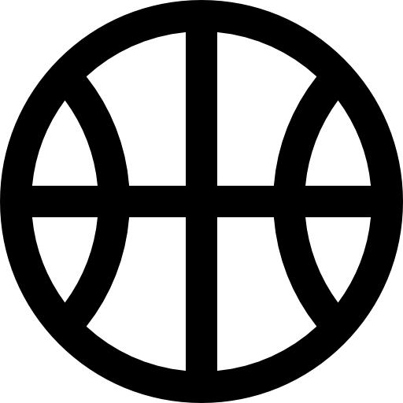
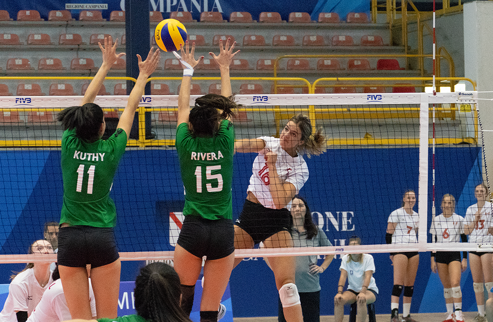

Sports

Sports
Lastly, I enjoy playing sports. In elementary school, I loved it because the competition was very less and I didn’t feel
the pressure. However, around grade 6, sports started giving me anxiety because I hated letting my team mates down.
I stopped playing for a while, but I started again for fun during quarantine. I think I have gained confidence after
playing just for fun. I want sports to be an enjoyable experience and I think they are, but individuals perceive it from
another perspective, and that is the person's fault, not the sport itself. Therefore, I think and I hope to try out for
Victoria Park’s sports teams. Here are some sports I enjoy playing.
Hover over the image to read about the sport!

Source: Sam Charles, USports
I enjoy volleyball because I love how it is competitive and fun at the same time. I
enjoy target sports and upper body strength ones. Therefore, sports such as soccer are my weakness.

Source: Selkirk Badminton Club
Badminton is another target sport. I started playing in grade 5 with just rallying and not
thinking about it. But once proper games started, it got really interesting. I’m good with playing doubles but
not really single since I don’t have that much experience

Source: Jeremy Brecard, USA TODAY sports
Although my skills in basketball are really weak and I miss ¾ of the shots I do, playing in a driveway
is the most fun thing to do. I don’t think I will try out for the team since I lack many factors, but the sport is an
enjoyable pastime.

 Click here to return to the top of the page
Click here to return to the top of the page